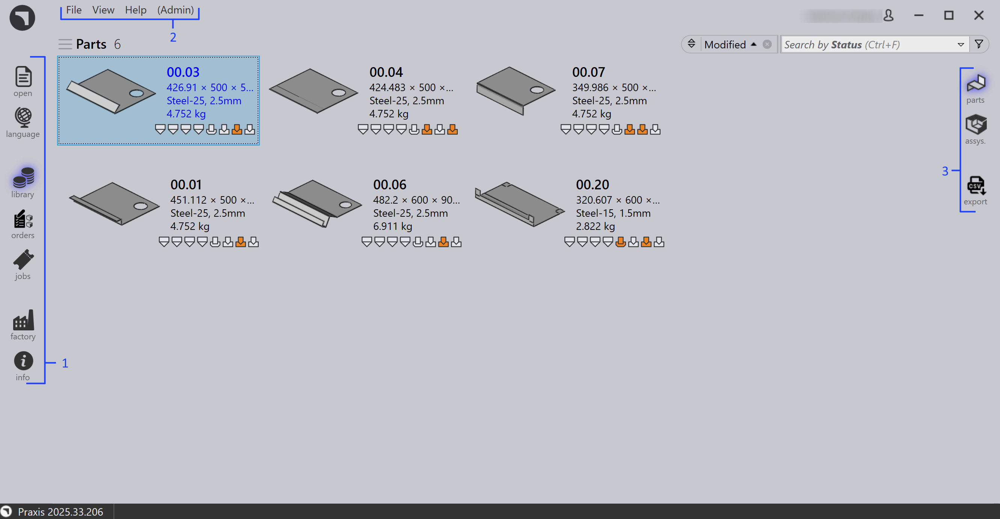

L'interfaccia utente
L’interfaccia utente di TruSmartCAM fornisce accesso a tutte le funzioni principali tramite la barra dei comandi e la barra dei menu, consentendo una navigazione e un funzionamento efficienti.

Nell’immagine:
1 - Barra dei comandi
2 - Barra dei menu
3 - Sottocomandi
Barra dei comandi
aperto - Importa parti, commesse, ordini e assemblaggi nella libreria. Per i dettagli, vedere Open.
lingua - Modifica la lingua dell’interfaccia utente. Per i dettagli, vedere Language.
biblioteca - Apre la pagina iniziale della libreria, dove parti e assemblaggi vengono mostrati separatamente. Per i dettagli, vedere Library.
jobs - Visualizza le commesse importate o create. Per i dettagli, vedere Jobs.
fabbrica - Apre la posizione centrale per configurare e gestire percorsi, materiali, utenti e dati dei clienti per la configurazione della produzione. Per i dettagli, vedere Factory.
info - Visualizza informazioni sul software.
Barra dei menu
_File - Fornisce opzioni per aprire parti, commesse, ordini e assemblaggi e per uscire dall’applicazione.
_Visualizza - Consente di passare tra le schermate e accedere a diverse viste.
_Aiuto - Fornisce accesso al manuale della guida e alle opzioni di aggiornamento del software.
Amministratore - Contiene impostazioni amministrative e opzioni di configurazione.
Sottocomandi
Parts - Visualizza gli elementi della Libreria Parti.
Assys - Passa agli elementi di assemblaggio nella vista Libreria.
Export - Esporta la parte corrente o il report di attrezzaggio come CSV.